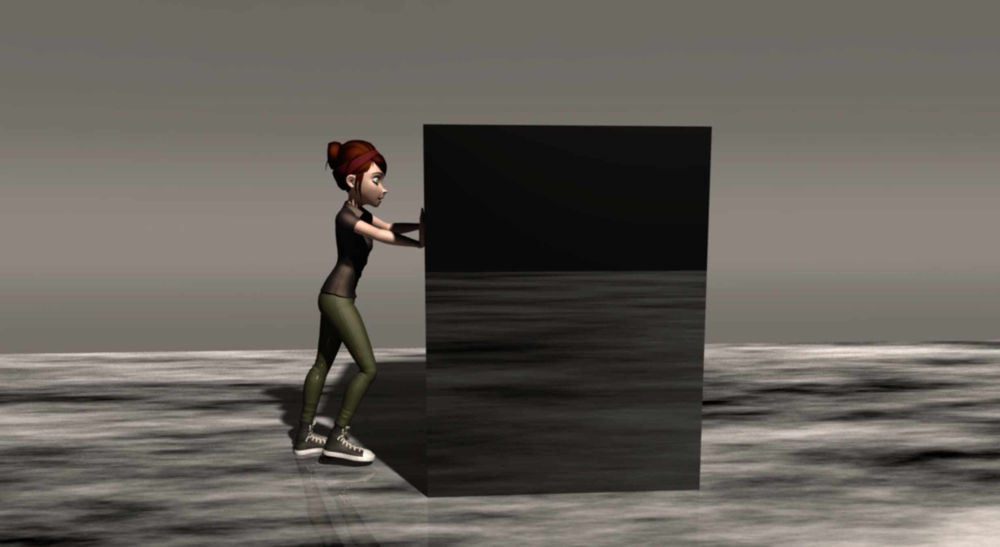
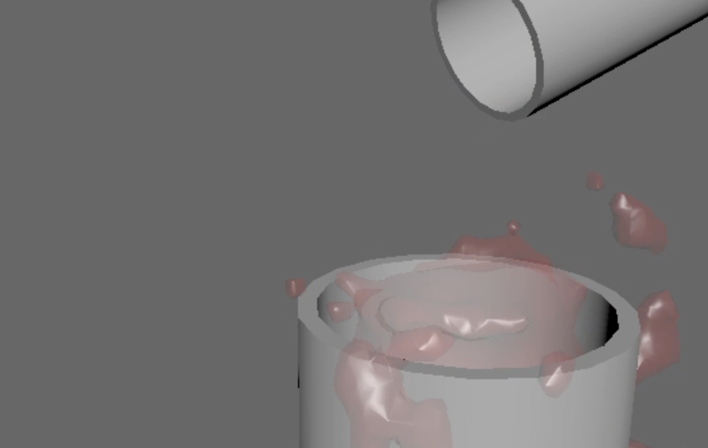
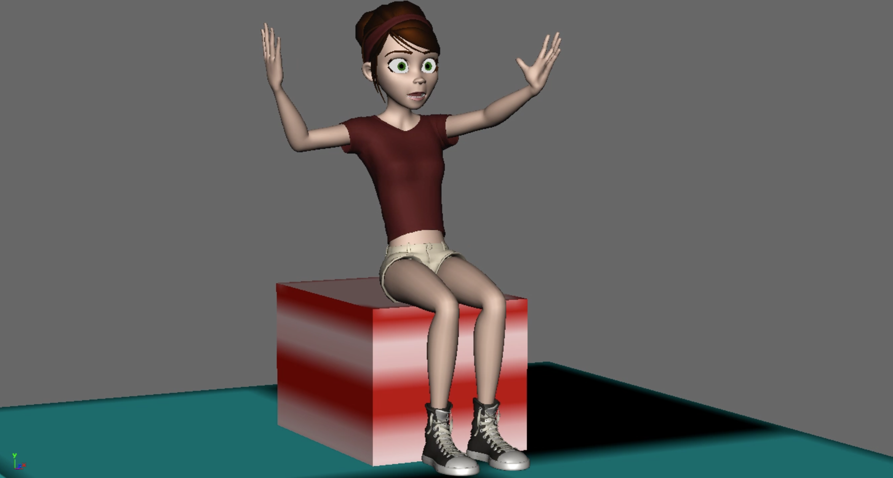
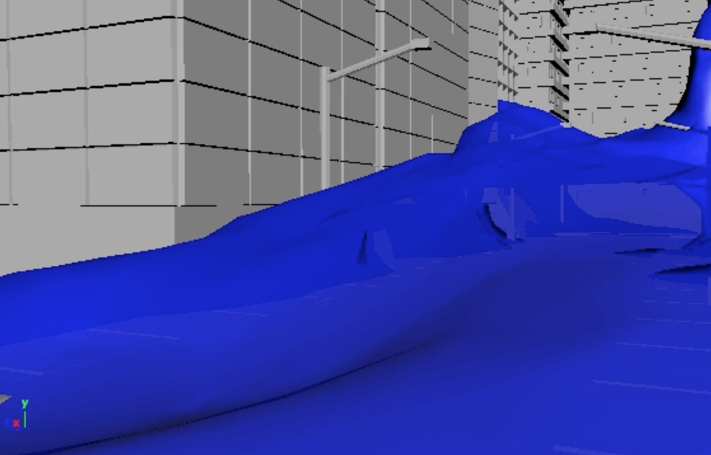

A video of my final project for 3d animation class. I learned about using storyboard and putting my ideas into a digital design. I animated the Mery character and made her do a pushing action against the giant block that fell in her path.

This was a fun project of water dripping from a cup into another cup. I learned how to add a mesh on the bottom cup so the water doesn't drip out the bottom of the cup.

This project was my lip syncing project. I took a clip of "Back To The Future" and made the Mery character animate out the scene.

This was another water simulation of a giant wave going through a city. The water came in the city and crashed against the buildings.